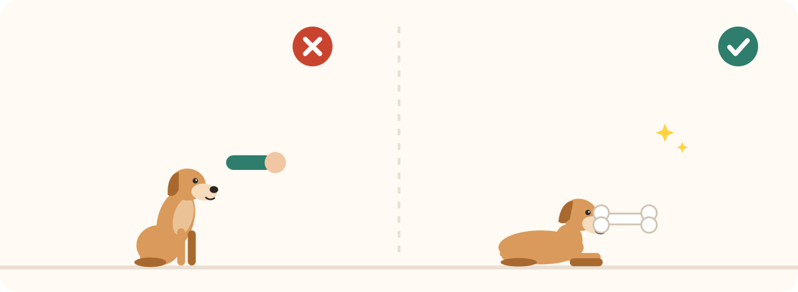
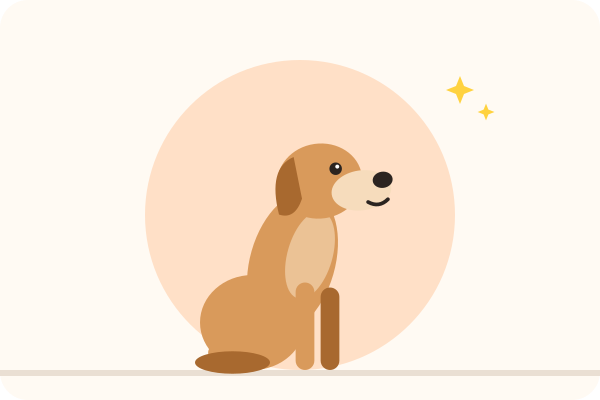

Clicker training : le guide pour débutants (chien et chat)
Un petit « clic », une récompense, et votre animal comprend exactement ce qu'il a bien fait. Le clicker training est l'une des façons les plus claires et les plus agréables d'apprendre, pour le chien comme pour le chat. Voici comment démarrer, pas à pas, même si vous n'avez jamais tenu un clicker.
Le clicker, comment ça marche ?
Le clicker est un petit boîtier qui fait toujours le même bruit. Ce son sert de marqueur : il dit à l'animal « oui, c'est exactement ça ! » au moment précis où il agit. Une friandise arrive juste après. Comme le clic est plus rapide et plus net qu'une parole, l'animal comprend mieux ce qui lui vaut la récompense.
C'est une forme de renforcement positif : on récompense ce qu'on veut voir se répéter. Vous trouverez le détail de la méthode sur notre page le clicker.
Le plus simple pour débuter : son net, bouton souple, et il reste au poignet.
Vous hésitez entre plusieurs modèles ? Notre comparatif quel clicker choisir vous aide, notamment si votre animal est sensible aux bruits.
Avant de commencer : préparez les friandises
- De toutes petites friandises, que l'animal avale en une seconde : vous allez en donner beaucoup. Retirez-les de sa ration du jour.
- Une friandise qu'il adore : c'est elle qui donne de la valeur au clic.
- Un endroit calme, sans distraction, et un animal ni trop affamé ni repu.
- Une pochette pour avoir les friandises sous la main : le timing compte.
Les friandises à portée de main, pour récompenser juste après le clic.
Pour choisir, voyez nos comparatifs des friandises d'éducation et des pochettes à friandises.
Étape 1 : « charger » le clicker
Au départ, le clic ne veut rien dire pour votre animal. Il faut l'associer à la récompense :
- Cliquez une fois, puis donnez aussitôt une friandise. Votre animal n'a rien à faire.
- Recommencez une dizaine de fois, en variant un peu le moment.
- Faites le test : cliquez quand il regarde ailleurs. S'il tourne vivement la tête vers vous ou vers la friandise, c'est gagné, le clic a pris du sens.
Si votre animal sursaute au bruit, éloignez le clicker, cliquez dans votre poche, ou utilisez un clicker à volume réglable.
Étape 2 : un premier exercice facile, toucher la main
Le ciblage est un excellent premier exercice, pour le chien comme pour le chat :
- Présentez votre main ouverte à quelques centimètres de son nez.
- Par curiosité, il va la renifler : au moment où son nez touche votre main, clic, puis friandise.
- Recommencez en déplaçant un peu votre main. Quand il la touche à chaque fois, ajoutez un mot (« touche ») juste avant de présenter la main.
Ce petit tour sert ensuite à tout : déplacer l'animal sans le tirer, l'amener sur la balance, le faire venir près de vous.
Étape 3 : capturer et façonner
- Capturer : cliquez un comportement qu'il fait déjà spontanément, comme s'asseoir ou se coucher. Il comprend vite qu'il peut « provoquer » le clic (voir la capture).
- Façonner : pour un comportement plus complexe, on clique chaque petite étape qui s'en rapproche, puis on devient plus exigeant (voir le façonnage).
C'est ainsi qu'on peut apprendre « assis », « couché » et « pas bouger », mais aussi des tours ou des gestes utiles pour les soins.
Les règles d'or
- Un clic = une récompense, toujours, même si vous avez cliqué un peu trop tôt.
- Le clic termine l'action : votre animal peut bouger après le clic, c'est normal.
- Des séances courtes : quelques minutes, et on s'arrête sur une réussite.
- Le clicker ne sert pas à appeler l'animal ni à attirer son attention.
- Pas de clic pour rien : ne cliquez pas sans récompenser, sinon le clic perd sa valeur.
Et avec un chat ?
Les chats apprennent très bien au clicker ! Utilisez une friandise très appétente (pâte, morceau de poulet cuit), des séances encore plus courtes, et un clicker au son doux si votre chat est sensible. Les premiers exercices utiles : toucher la main, venir à l'appel, entrer dans la caisse de transport, monter sur un tabouret. Beaucoup de chats d'intérieur adorent ces séances, qui les occupent autant qu'un jeu : complétez avec de bons jouets pour chat d'intérieur.
Les erreurs fréquentes
Et après ?
Quand un comportement est bien acquis et associé à un mot, vous pouvez progressivement laisser le clicker de côté pour ce comportement et le récompenser autrement (caresse, jeu, friandise de temps en temps). Gardez le clicker pour les nouveaux apprentissages. Pour occuper la tête de votre chien entre deux séances, les jeux d'intelligence sont un excellent complément.
Pour aller plus loin : quel clicker choisir ? · quels jeux d'intelligence pour chien ? · quels jouets pour un chat d'intérieur ? · toutes les méthodes · le guide du chien · le guide du chat.
À lire aussi

Quels jeux d'intelligence pour chien ? Le comparatif
Puzzles, tapis de fouille, distributeurs ou peluches cache-cache : quel jeu d'intelligence choisir selon votre chien.
Adopter un chiot à Noël : bonne idée ou fausse bonne idée ?
Pourquoi les fêtes sont un mauvais moment pour accueillir un chiot, et comment offrir un animal intelligemment.

Chien et froid : faut-il le couvrir en hiver ?
Quels chiens ont froid, les signes à surveiller, le bon manteau, les pattes, le sel et les dangers de l'hiver.